Filthy Blonde
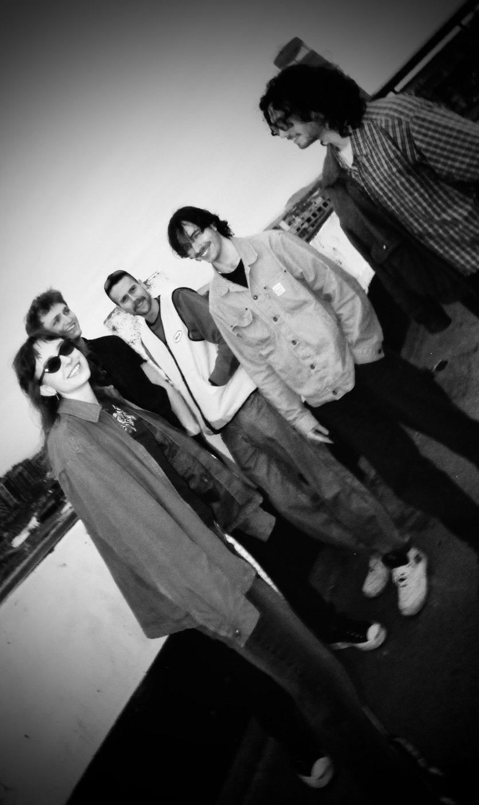
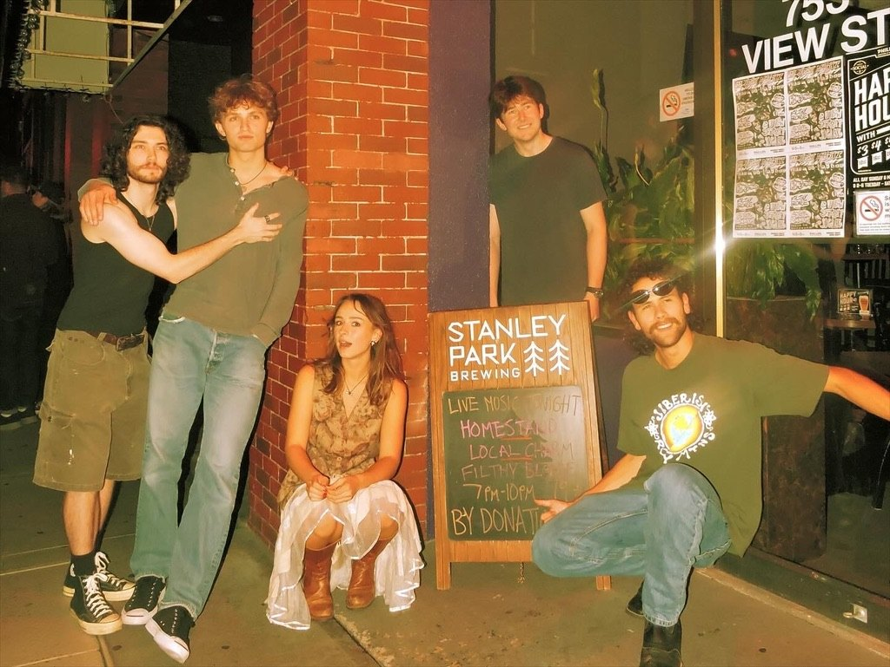
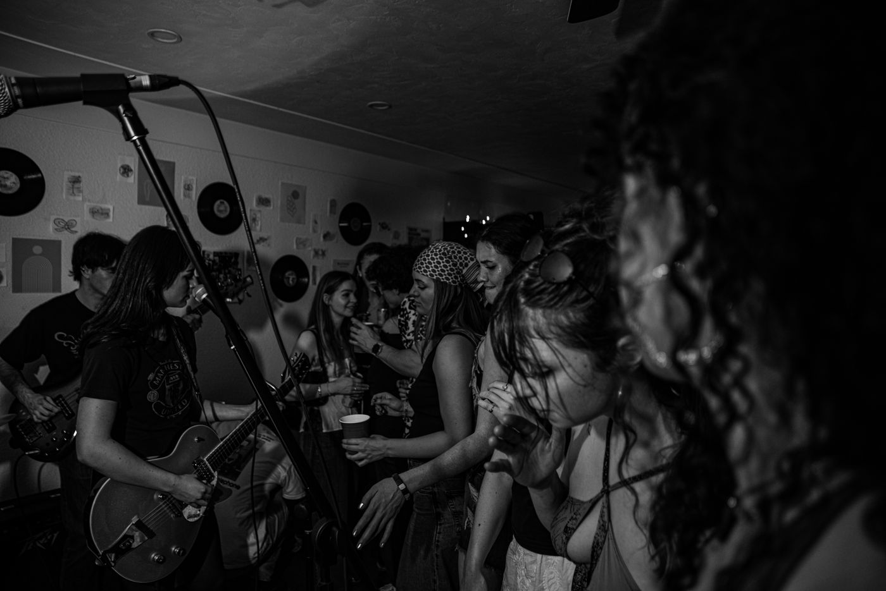
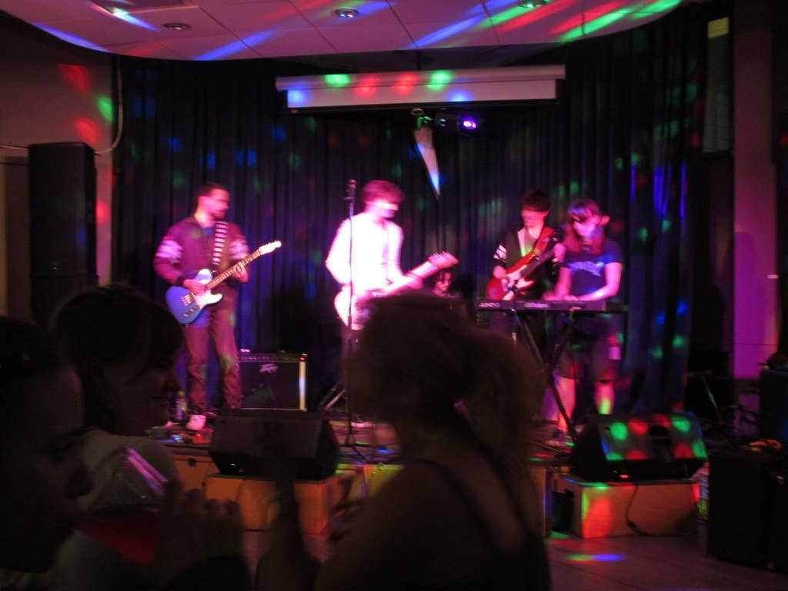
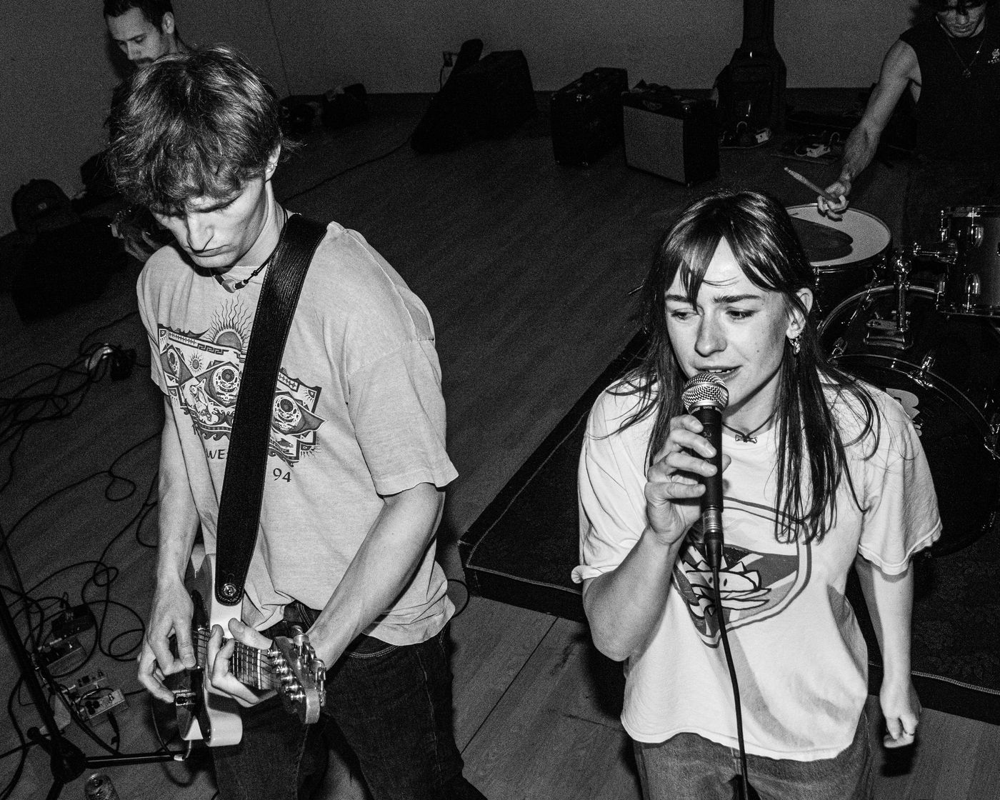
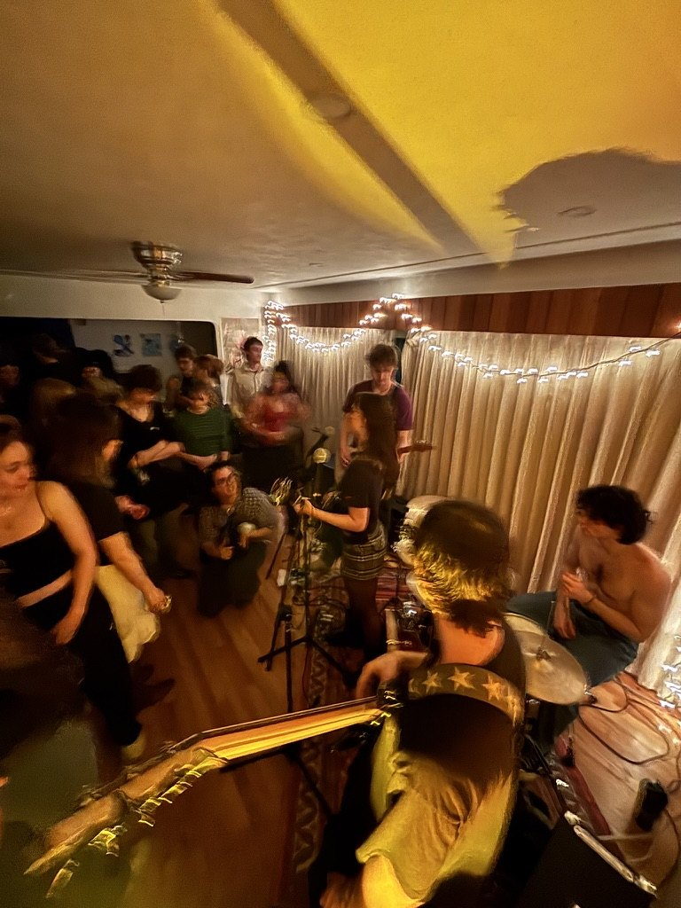
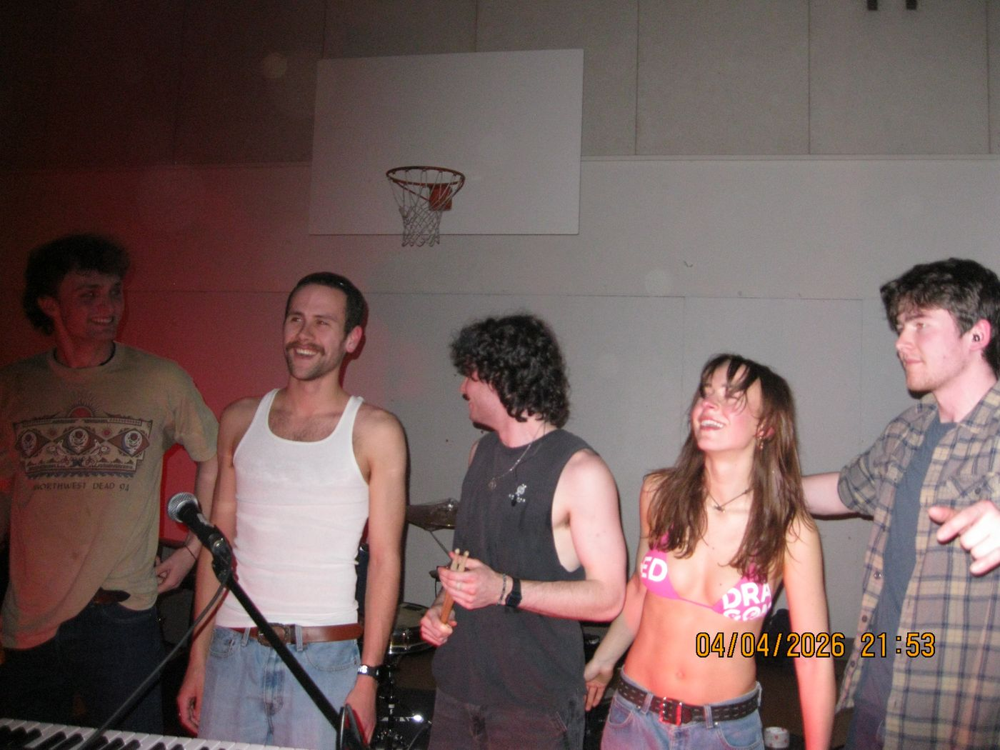
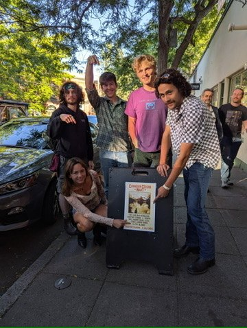
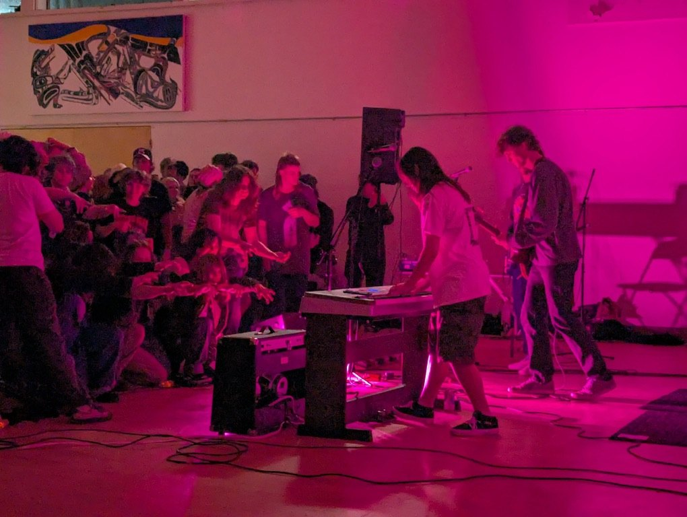
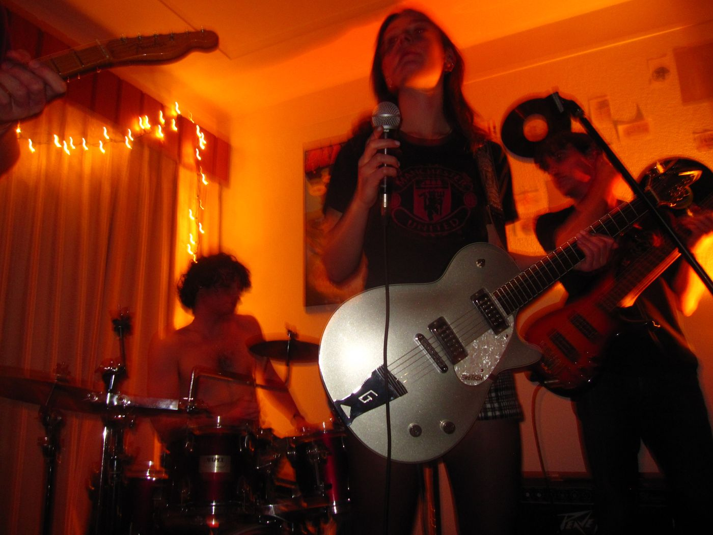
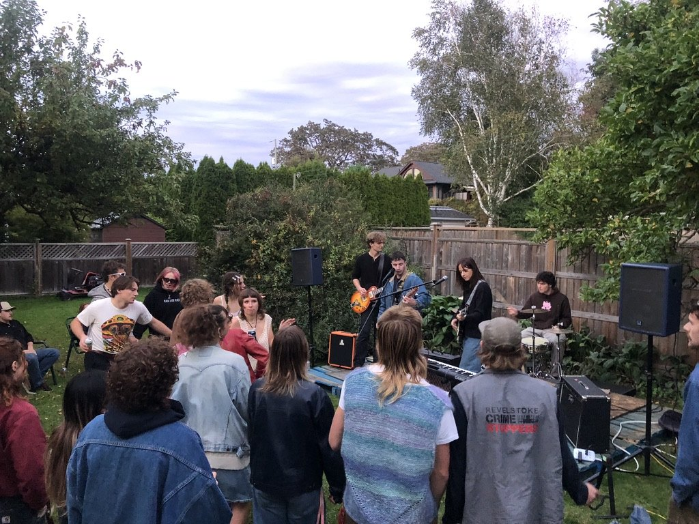
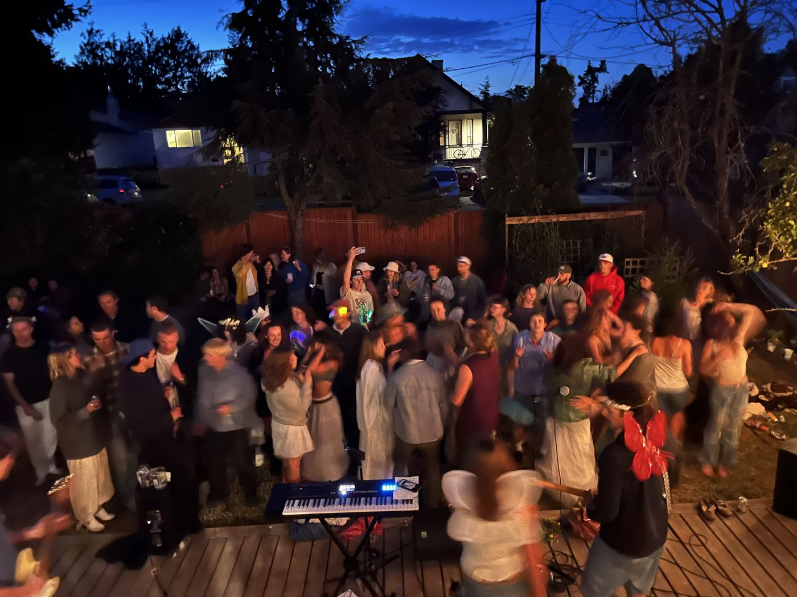
Filthy Blonde is me (Sonia Rosenberger) on synths and vocals, Jackson Easden on drums, Kobi Franes on guitar, Chuck Wilton on guitar and vocals, Luke Easden on bass guitar, and Nash Delanuez on bass guitar.
We started jamming in Summer 2024 and had a lot of fun.
First show ->
Thanks to our superfan friends and the DIY music scene we got to play one bajillion house parties and one gajillion backyard shows...
We've written and performed a bunch of original music, zero of which was released. Check out our YouTube and Bandcamp.
Can't Stand
...some local gigs...
...and a prestigious international tour to Seattle WA.
Filthy Blonde is now on indefinite hiatus since we are no longer bound to Victoria by the shackles of engineering school but if we randomly blow up in some foreign country we will agree to come out of retirement.
Our Instagram is still alive if you wanna check it out.
Filthy Blonde Interview - Midnight Sun Special CFUV 101.9
Broadcast April 20th, 2026
Broadcast April 20th, 2026
Photo/video credits to Radana Latushkina, Ronan Bowman, Anna King, Maeve Campbell, Cassidy Wilton, and Rylee Rosenberger.